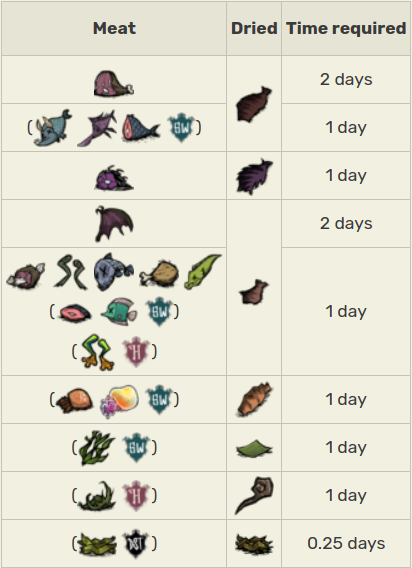

How to Dry meat
The Drying Rack is a craftable Food Tab Structure. It requires 3 Twigs, 2 Charcoal, and 3 Rope to craft and a Science Machine to prototype.
The Drying Rack can dry most Meats and most Fish into Jerky, Small Jerky, or Monster Jerky.
Dried food items take significantly longer to spoil and often provide better Health and Sanity
compared to raw food used in the rack or their cooked versions. In Don't Starve, Meat, Monster Meat,
Morsel, Frog Legs, Fish, Eel, Drumstick and Batilisk Wing can all be dried on the Drying Rack if they are uncooked.
Unlike the results of Cooking, the dried food created will always be completely fresh. This means a spoiled Morsel can be dried to get a completely fresh piece of Small Jerky. Dried food left on a Drying Rack does not spoil until collected.
